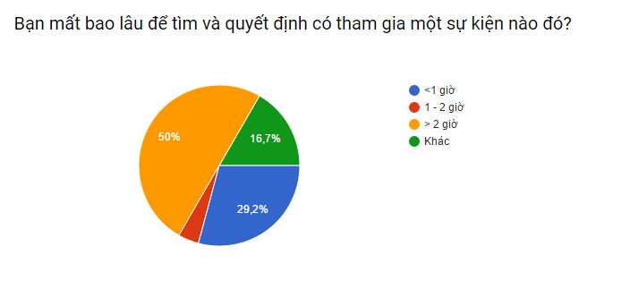

BƯỚC 3
Sau khi thực hiện xong các bước 1, 2, chúng ta sẽ ghi nhớ thông tin cơ bản của sự kiện, nơi truy xuất lại thông tin của sự kiện đó. Nếu cảm thấy đã đầy đủ thông tin, đủ để đưa ra quyết định, ta sẽ bắt đầu đưa ra quyết định và chuyển sang bước 4.

Nếu cảm thấy chưa đủ, chúng ta sẽ quay lại bước 2 và tiếp tục dò la các kênh thông tin thêm nhiều lần. Thông thường các bước 1, 2 được lặp lại khá nhiều lần trước khi người dùng có thể đưa ra quyết định cuối.
BƯỚC 3